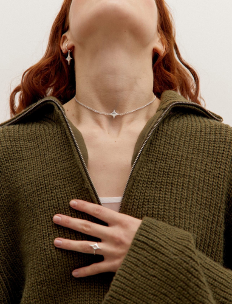
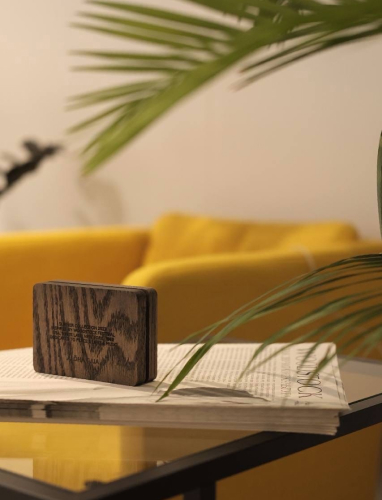
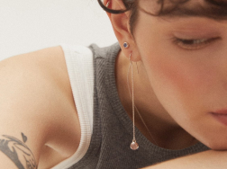
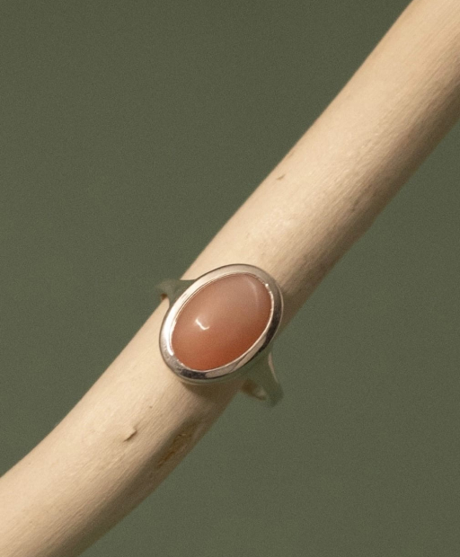
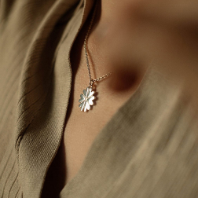
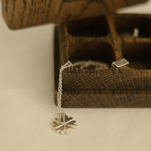

о бренде
ALOHAGAIA — это бренд ювелирных украшений, родившийся из большой любви к историям. Все они особенные, из разных времен и культур, но есть и кое-что общее — такими
историями хочется поделиться большой группой единомышленников, разделяющих схожие ценности.


коллекции
Наши коллекции — это отдельные исследования и путешествия, которые обретают свою материальную форму в украшениях. Создавая их, мы хотим, чтобы вы открывали для
себя
что-то новое, получали новые эмоции и вдохновение, а еще — становились нашими соавторами и соучастниками.

CLASSIC

Мы верим, что украшения и объекты могут о чем-то рассказать так же, как любимые книги, журналы и фильмы. И что они также умеют хранить истории своих владельцев и
обретать новые важные смыслы, когда соприкасаются с человеком.


А еще нам важно создавать украшения, не отрывая их от контекста, в котором мы живем. Поэтому каждая коллекция — это не только форма. Это еще и чувства нашей команды, наш взгляд на то, что происходит вокруг.
И мы особенно рады тому, что украшения могут быть мостиком между большой группой единомышленников, разделяющих схожие ценности.